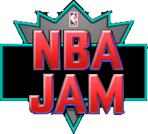

NBA Jam Secret Codes
Every secret character and hidden code in the games' own code, for Super Nintendo, Genesis, the arcade game, Game Boy, Game Gear, Sega CD and Tournament Edition (arcade, Super Nintendo, Genesis, 32X, Saturn, PlayStation, PC, Jaguar, Game Boy and Game Gear). ★ New marks codes that no published list had. Got a Super Nintendo password? Check it here.
Where these come from
These lists are read straight from each game's code, so nothing is missing, and every code was tested in an emulator unless its card says otherwise.
Details, addresses and screenshots are in the research notes.